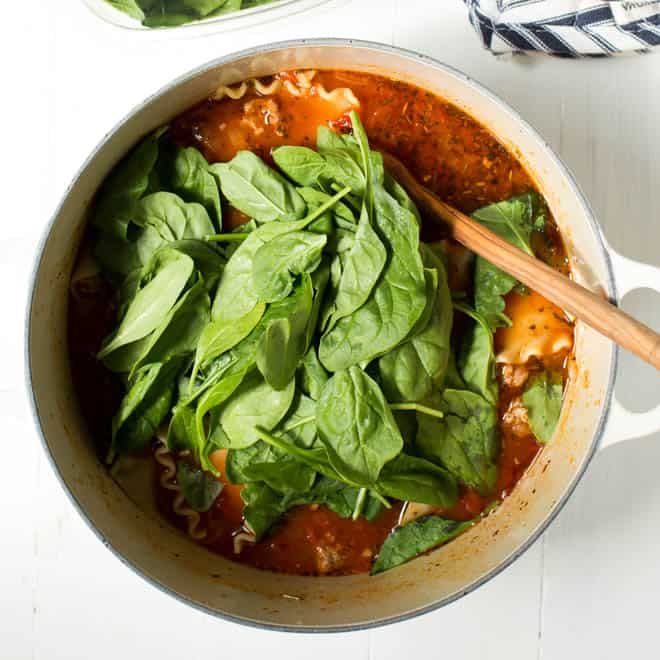

Lasagna Soup

Description
~soup~
Ingredients
- 1 onion
- garlic
- 5oz bag of spinach
- 8 cups chicken broth
- tomato paste
- 1 Rao's vodka sauce
- 1 box rigatoni
- Italian seasoning
- garlic powder
- onion powder
- red pepper flakes
- 16oz ground turkey
- 16oz ground hot italian sausage
- optional mozzarella balls
Steps
- Dice onion and mince garlic. Add to pot with oil on medium heat and cook until onions are slightly translucent
- Add ground turkey and ground hot italian sausage. Season with Italian seasoning, garlic powder, onion powder, and red pepper flakes
- Once ground meat is nearly cooked through, add tomato paste, mix, then add Rao's vodka sauce
- Add 8 cups of chicken broth and bring to a boil
- Add rigatoni and cover until cooked. Stir often
- Once pasta is cooked, turn off heat and add spinach
- Serve with crescent rolls :)